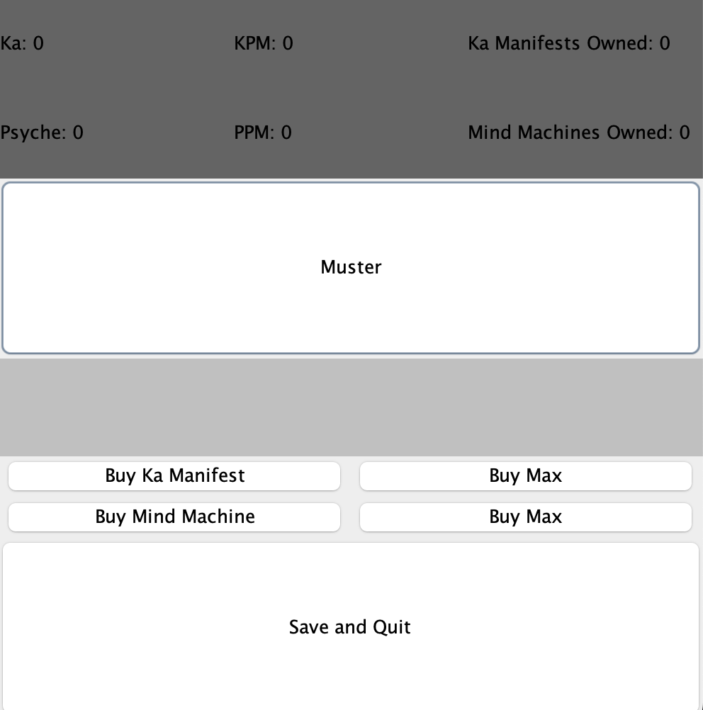

Clicker Game
December 2023
This project was my first foray into the world of Java, produced over the course of a month, concluding in December of 2023. The concept was to create the framework for a clicker game with an emphasis on engine building mechanics and storytelling. The inspiration for this game comes from 2013's A Dark Room, a game I played in the browser when I was 13. A Dark Room initially presents itself as an unassuming clicker game. You are given a button to 'stoke the fire' and as you tend to the fire, you are exposed to more and more of the environment around you. Text readouts give you an apprehension of the scene around you and more buttons appear as you discover uses for more and more resources. You explore all of the resources in your surroundings and continuously push your domain until it takes a small civilization to gather the materials you desire. The game ends with a triumphant space shuttle launch, as any self-respecting civilization requires a space program.
My game draws on the impact of A Dark Room with the intention of creating the same air of mystery. Minimal graphics and poignant storytelling was where the game found it's personality. I drafted out a basic outline of the game and began work on it by creating the classes that would be the backbone of functionality. I wanted to create an easily modifiable framework for the game so that any story could be told. The first phase of development consisted of creating these classes.
The story of the game is told through dialogue reached at critical points of resource accumulation. Resources are accumulated by clicking on a 'harvest' button and each click gives a set amount of resources determined by the 'engines' that the player has. Resources are used to purchase more engines which are used to create more resources.
Creating a functioning game within the console was fairly straighforward. The difficulty of the project came from the implementation of the graphical interface and the save/load feature. The GUI was built using Java's SWING library which was certainly dated and unintuitive. The final GUI design of the game is not one that I was completely satisfied with, but it has all the features I needed it to hold. If I were to revamp the project, I would use LWJGL which would give me more flexibility if I wanted to add more features to the game and also have more options to create a GUI that is cleaner and adds more to the affect of the game. The save/load feature was implemented using Java persistence. I had not worked with it before so it took some tinkering to get it to a working state. A rudimentary save/load came together fairly quickly - rewriting classes to work with the system took much longer.
An additional feature is a log of activity that is saved when the game is exited. This is to verify the integrity of the code and to make troubleshooting easier, especially as the game increases in complexity with more resources and engines.
The final product has 3 engines with 2 resources with numerous dialogue options telling the story of a doomed computer system destined to slave away until the very end. There are 9 possible endings, each of which is reached at different points in the game with no 'good' or 'bad' ending.